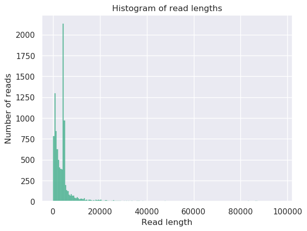
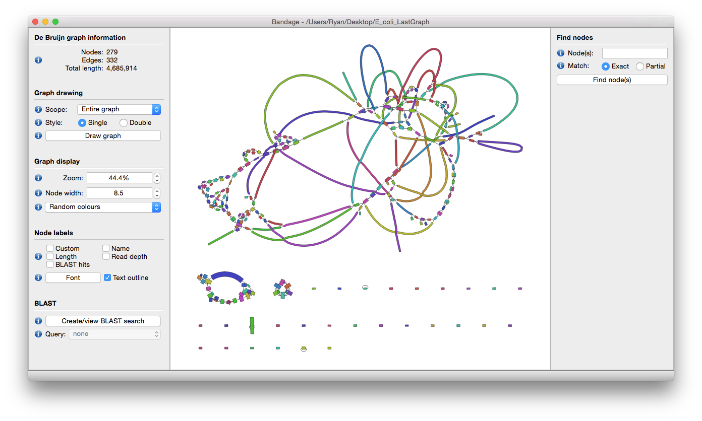
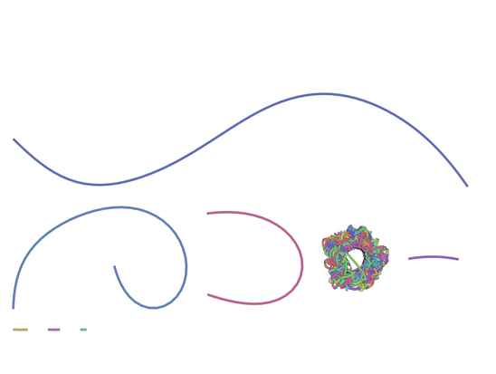
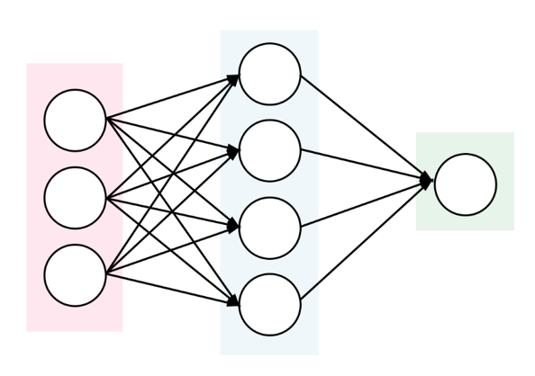
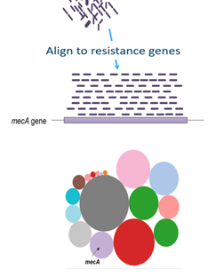

Pervasive use (and misuse) of antibiotics for human disease treatment, as well as for various agricultural purposes, has resulted in the evolution of multi-drug resistant (MDR) pathogenic bacteria. The Center for Disease Control estimates that in the U.S. alone, every year at least 2 million people get an antibiotic-resistant infection, and at least 23,000 people die. Antibiotic resistance poses a major public health challenge, and its causes and mitigations are widely studied.
Plasmids are small DNA molecules within a cell which are physically separated from chromosomal DNA and can replicate independently. They are most commonly found as small circular, double-stranded DNA molecules in bacteria.
Plasmids are considered a major vector facilitating the transmission of drug resistant genes among bacteria via horizontal transfer (Beatson and Walker 2014, Smillie et al. 2010). Careful characterization of plasmids and other MDR mobile genetic elements is vital for understanding their evolution and transmission and adaptation to new hosts.
Due to the high prevalence of repeat sequences and inserts in plasmids, using traditional NGS short-read sequencing to assemble plasmid sequences is difficult and time-consuming. With the advent of third-generation single-molecule long-read sequencing technologies, full assembly of plasmid sequences is now possible.
In this tutorial we will recreate the analysis described in the paper by Li et al. 2018 entitled Efficient generation of complete sequences of MDR-encoding plasmids by rapid assembly of MinION barcoding sequencing data. We will use data sequenced by the Nanopore MinION sequencer.
Your results may be slightly different from the ones presented in this tutorial
due to differing versions of tools, reference data, external databases, or
because of stochastic processes in the algorithms.
In this tutorial we use metagenomic Nanopore data, but similar pipelines can be used for other types of datasets or other long-read sequencing platforms.
Obtaining and preparing data
We are interested in the reconstruction of full plasmid sequences and determining the presence of any antimicrobial resistance genes.
We will use the plasmid dataset created by Li et al. 2018 for their evaluation of the efficiency of MDR plasmid sequencing by MinION platform. In the experiment, 12 MDR plasmid-bearing bacterial strains were selected for plasmid extraction, including E. coli, S. typhimurium, V. parahaemolyticus, and K. pneumoniae.
comment Background: Nanopore sequencing
Nanopore sequencing has several properties that make it well-suited for our purposes
Long-read sequencing technology offers simplified and less ambiguous genome assembly
Long-read sequencing gives the ability to span repetitive genomic regions
Long-read sequencing makes it possible to identify large structural variations
Open the Galaxy Upload Manager (galaxy-upload on the top-right of the tool panel)
Select Paste/Fetch Data
Paste the link into the text field
Press Start
Close the window
By default, Galaxy uses the URL as the name, so rename the files with a more useful name.
Build a list collection containing all 12 fasta files. Name it Plasmids
tip Tip: Creating a dataset collection
Click on Operations on multiple datasets (check box icon) at the top of the history panel
Check all the datasets in your history you would like to include
Click For all selected.. and choose Build dataset list
Enter a name for your collection
Click Create List to build your collection
Click on the checkmark icon at the top of your history again
Quality Control
NanoPlot to explore data
The first thing we want to do is to get a feeling for our input data and its quality. This is done
using the NanoPlot tool. This will create several plots, a statisical report and an HTML
report page.
hands_on Hands-on: Plotting scripts for long read sequencing data
NanoPlottool with the following parameters
“Select multifile mode”: batch
“Type of the file(s) to work on”: fasta
“files”: The Plasmids dataset collection you just created
tip Tip: Selecting a dataset collection as input
Click on param-collectionDataset collection in
front of the input parameter you want to supply the collection to.
Select the collection you want to use from the list
The HTML report gives an overview of various QC metrics for each sample. For example, it will
plot the read length distribution of each sample:

question Question
What was the mean read length for this (RB01) sample?
solution Solution
4906.3
This can be determined by looking at the NanoStats or HTML output of NanoPlot RB01.
For more information on the topic of quality control, please see our training materials
here
De-novo Assembly
Pairwise alignment using Minimap2
In this experiment we used Nanopore sequencing; this means that sequencing results in long reads with overlap.
To find this overlap, Minimap2 is used. Minimap2 is a sequence alignment program that can be used for different
purposes, but in this case we’ll use it to find overlaps between long reads with an error rate up to ~15%.
Typical other use cases for Minimap2 include: (1) mapping PacBio or Oxford Nanopore genomic reads to the human genome;
(2) splice-aware alignment of PacBio Iso-Seq or Nanopore cDNA or Direct RNA reads against a reference genome;
(3) aligning Illumina single- or paired-end reads; (4) assembly-to-assembly alignment; (5) full-genome alignment
between two closely related species with divergence below ~15%.
Minimap2 is faster and more accurate than mainstream long-read mappers such as BLASR, BWA-MEM, NGMLR and GMAP and
therefore widely used for Nanopore alignment. Detailed evaluations of Minimap2 are available in
the Minimap2 publication (Li 2018).
hands_on Hands-on: Pairwise sequence alignment
Map with minimap2tool with the following parameters
“Will you select a reference genome from your history or use a built-in index?”: Use a genome from history and build index
“Use the following data collection as the reference sequence”: Created dataset collection (Plasmids)
“Single or Paired-end reads”: Single
“Select fastq dataset”: The Plasmids dataset collection
Click on param-collectionDataset collection in
front of the input parameter you want to supply the collection to.
Select the collection you want to use from the list
This step maps the Nanopore sequence reads against itself to find overlaps. The result is a PAF file.
PAF is a text format describing the approximate mapping positions between two
set of sequences. PAF is TAB-delimited with each line consisting of the
following predefined fields:
Col
Type
Description
1
string
Query sequence name
2
int
Query sequence length
3
int
Query start (0-based)
4
int
Query end (0-based)
5
char
Relative strand: “+” or “-“
6
string
Target sequence name
7
int
Target sequence length
8
int
Target start on original strand (0-based)
9
int
Target end on original strand (0-based)
10
int
Number of residue matches
11
int
Alignment block length
12
int
Mapping quality (0-255; 255 for missing)
View the output of Minimap2tool of the collection against RB12, it should look something like this:
The mapped reads are ready to be assembled with Miniasmtool (Li 2016). Miniasm is a very fast Overlap Layout Consensus based de-novo assembler for noisy long reads.
It takes all-vs-all read self-mappings (typically by Minimap2tool) as input and outputs an assembly graph in the GFA format.
Different from mainstream assemblers, miniasm does not have a consensus step.
It simply concatenates pieces of read sequences to generate the final sequences.
The optimal case would be to recreate a complete chromosome or plasmid.
Thus the per-base error rate is similar to the raw input reads.
hands_on Hands-on: De novo assembly
miniasmtool with the following parameters
“Sequence Reads”: The Plasmids dataset collection
“PAF file”: Output Minimap dataset collection created by Minimap2tool
tip Tip: Selecting a dataset collection as input
Click on param-collectionDataset collection in
front of the input parameter you want to supply the collection to.
Select the collection you want to use from the list
The Assembly Graph output file gives information about the steps taken in the assembly.
The output should look like:
S utg000001l GAAATCATCAGGCGTTTTTCACGATATGGACGGGAAGATGCGGAAATAGGCAGGAGGACATAGAA [..]
a utg000001l 0 channel_364_204a2254-2b6f-4f10-9ec5-6d40f0b870e4_template:101-4457 + 4357
Remapping using Minimap2
The Assembly graph created can be used for mapping again with Minimap2, but first the graph should be transformed to FASTA format.
Remapping is done with the original reads, using the Miniasm assembly as a reference, in order to improve the consensus base call per position. This is used by Racontool for consensus construction.
hands_on Hands-on: Pairwise sequence alignment
GFA to Fastatool with the following parameters
“Input GFA file”: the Assembly Graph (collection) created by Miniasmtool
Map with minimap2tool with the following parameters
“Will you select a reference genome from your history or use a built-in index?”: Use a genome from history and build index
“Use the following dataset as the reference sequence”: FASTA file collection created by GFA to Fastatool
Click on param-collectionDataset collection in
front of the input parameter you want to supply the collection to.
Select the collection you want to use from the list
question Question
How many contigs do we have for the RB05 sample after the use of Minimap2tool and Miniasmtool?
Hint: run Nanoplottool on the output of GFA to Fastatool
solution Solution
22
This can be determined by looking at the NanoStats output of NanoPlot.
Ultrafast consensus module using Racon
The mapped reads can be improved even more using Racontool (Vaser et al. 2017) to find a consensus sequence.
Racon is a standalone consensus module to correct raw contigs generated by rapid assembly methods which do not include a consensus step.
It supports data produced by both Pacific Biosciences and Oxford Nanopore Technologies.
hands_on Hands-on: Consensus module
Racontool with the following parameters
“Sequences”: The Plasmids dataset collection
“Overlaps”: the latest PAF file collection created by Minimap2tool
“Target sequences”: the FASTA file collection created by GFA to Fastatool
The Racontool output file gives the final contigs.
To get a sense of how well our data was assembled, and to determine whether the contigs are chomosomal or plasmid DNA (the former being linear sequences while plasmids are circular molecules), Bandagetool can give a clear view of the assembly.
Bandagetool (Wick et al. 2015) (a Bioinformatics Application for Navigating De novo Assembly Graphs Easily), is a program that creates visualisations of assembly graphs.
Sequence assembler programs (such as Miniasmtool (Li 2016), Velvettool (Zerbino and Birney 2008), SPAdestool (Bankevich et al. 2012), Trinitytool (Grabherr et al. 2011) and MEGAHITtoolLi et al. 2015) carry out assembly by building a graph, from which contigs are generated.
By visualizing these assembly graphs, Bandage allows users to better understand, troubleshoot, and improve the assemblies.

hands_on Hands-on: Visualising de novo assembly graphs
Bandage imagetool with the following parameters
“Graphical Fragment Assembly”: the Assembly graph collection created by Miniasmtool
Explore galaxy-eye the output images
question Question
In how many samples were the full plasmid sequences assembled?
Hint: what shape do you expect plasmid molecules to be?
solution Solution
Ideally, we want to see circular assemblies, indicating the full plasmid sequence was resolved.
This is not the case for most of the samples, but we will improve our assemblies in the next section!
For example, the assembly for sample RB01 looks something like this (your assembly will look a bit different due to randomness in several of the tools):
Figure 2: Bandage output for sample RB01. Large fragments were assembled, but not the full circular plasmid molecules.
As you can see from these Bandage outputs, we were able to assemble our data into fairly large fragments, but were not quite successful in assembling the full (circular) plasmid sequences.
However, all the tools we used to do the assembly have many different parameters that we did not explore, and multiple rounds of mapping and cleaning could improve our data as well. Choosing these parameters carefully could potentially improve our assembly, but this is also a lot of work and not an easy task. This is where Unicyclertool (Wick et al. 2017) can help us out.
Optimizing assemblies using Unicycler
The assembly tools we used in this tutorial are all implemented in Unicyclertool, which will repeatedly run these tools on your data using different parameter settings, in order to find the optimal assembly.
Unicyclertool has a couple of advantages over running the tools separately:
The first modification is to help circular replicons assemble into circular string graphs.
Racontool polishing is carried out in multiple rounds to improve the sequence accuracy. It will polish until the assembly stops improving, as measured by the agreement between the reads and the assembly.
Circular replicons are ‘rotated’ (have their starting position shifted) between rounds of polishing to ensure that no part of the sequence is left unpolished.
Let’s try it on our data!
hands_on Hands-on: Unicycler assembly
Create assemblies with Unicyclertool with the following parameters
“Paired or Single end data”: None
“Select long reads. If there are no long reads, leave this empty”: The Plasmids dataset collection
Bandage imagetool with the following parameters
“Graphical Fragment Assembly”: the Final Assembly Graph collection created by Unicyclertool
Examine galaxy-eye the output images again
question Question
For which samples has the plasmid assembly improved?
solution Solution
Exploring the outputs for all the samples reveals that many now display circular assemblies, indicating the full plasmids sequence was resolved.
The Assembly graph image of the RB01 assembly with miniasmtool shows one unclear hypothetical plasmid, where the output of Unicyclertool shows two clear plasmids, as also shown by Li et al. 2018.
Species and plasmids
Prediction of plasmid sequences and classes using PlasFlow
To automatically determine whether the contigs represent chromosomal or plasmid DNA, PlasFlowtool (Krawczyk et al. 2018) can be used, also in the case where a full circular plasmid sequence was not assembled. Furthermore, it assigns the contigs to a bacterial class.
PlasFlowtool is a set of scripts used for prediction of plasmid sequences in metagenomic contigs.
It relies on the neural network models trained on full genome and plasmid sequences and is able to differentiate between plasmids and chromosomes with accuracy reaching 96%.

hands_on Hands-on: Prediction of plasmid sequences
PlasFlowtool with the following parameters
“Sequence Reads”: the Final Assembly collection created by Unicyclertool
question Question
What is the classification of contig_id 0 in RB10? (Hint: Check the probability table created by PlasFlow)
solution Solution
plasmid.Proteobacteria
This can be determined by looking at the 5th column of the probability table.
The most important output of PlasFlowtool is a tabular file containing all predictions, consisting of several columns including:
contig_id contig_name contig_length id label ...
where:
contig_idis an internal id of sequence used for the classification
contig_name is a name of contig used in the classification
contig_length shows the length of a classified sequence
id is an internal id of a produced label (classification)
label is the actual classification
... represents additional columns showing probabilities of assignment to each possible class
Additionally, PlasFlow produces FASTA files containing input sequences binned to plasmids, chromosomes and unclassified.
Antibiotic Resistance
Scan genome contigs for antimicrobial resistance genes
To determine whether the contigs contain antimircobial resistance genes (AMR) staramr can be used.
Staramrtool scans bacterial genome contigs against both the ResFinder (Zankari et al. 2012), PointFinder (Zankari et al. 2017), and PlasmidFinder (Carattoli et al. 2014) databases (used by the ResFinder webservice)
and compiles a summary report of detected antimicrobial resistance genes.

hands_on Hands-on: Prediction of AMR genes
staramrtool with the following parameters
“genomes”: the Final Assembly collection created by Unicycler
question Question
Which samples contained the resistance gene: dfrA17?
Hint: Check the resfinder.tsv created by staramr
solution Solution
RB01, RB02, and RB10
This can be determined by looking at the 2nd column of the resfinder.tsv output (and the first column for the sample names).
There are 5 different output files produced by staramrtool:
summary.tsv: A summary of all detected AMR genes/mutations in each genome, one genome per line.
resfinder.tsv: A tabular file of each AMR gene and additional BLAST information from the ResFinder database, one gene per line.
pointfinder.tsv: A tabular file of each AMR point mutation and additional BLAST information from the PointFinder database, one gene per line.
settings.txt: The command-line, database versions, and other settings used to run staramr.
results.xlsx: An Excel spreadsheet containing the previous 4 files as separate worksheets.
The summary file is most important and provides all the resistance genes found.
CARD database
To get more information about these antibiotic resistant genes, you can check the CARD database (Comprehensive Antibiotic Resistance Database) (Jia et al. 2016)
Figure 3: Screenshot of the CARD database interface. CARD gives information about the antibiotic resistance genes, as well as links to relevant publications.
question Question
What is the resistance mechanism of the dfrA17 gene?
For more information about antibiotic resistance mechanisms, see Munita and Arias
Conclusion
You have now seen how to perform an assembly on Nanopore sequencing data, and classify the type and species of the sequences, as well as determined the presence of potential antibiotic resistance genes.
As for any analysis, there are many different tools that can do the job, and the tools presented here are just
one possible pipeline. Which tools are best for your specific data and research question depends on a number of
factors. For more information and comparisons between various tools, review papers such as Maio et al. 2019 and Jayakumar and Sakakibara 2017
may provide further insight.
You have worked your way through the following pipeline:
keypoints Key points
Minimap2, Miniasm, and Racon can be used for quickly assembling Nanopore data
Unicycler can be used to optimize settings of assembly tools
Nanopore sequencing is useful for reconstruction of genomes
Antimicrobial resistance genes are detectable after fast assembly
The CARD database is a useful resource describing antibiotic resistance genes
Useful literature
Further information, including links to documentation and original publications, regarding the tools, analysis techniques and the interpretation of results described in this tutorial can be found here.
References
Munita, J. M., and C. A. Arias Mechanisms of Antibiotic Resistance, pp. 481–511 inVirulence Mechanisms of Bacterial Pathogens, Fifth Edition, American Society of Microbiology.10.1128/microbiolspec.vmbf-0016-2015
Zerbino, D. R., and E. Birney, 2008 Velvet: Algorithms for de novo short read assembly using de Bruijn graphs. Genome Research 18: 821–829.10.1101/gr.074492.107
Smillie, C., M. P. Garcillan-Barcia, M. V. Francia, E. P. C. Rocha, and F. de la Cruz, 2010 Mobility of Plasmids. Microbiology and Molecular Biology Reviews 74: 434–452.10.1128/mmbr.00020-10
Grabherr, M. G., B. J. Haas, M. Yassour, J. Z. Levin, D. A. Thompson et al., 2011 Full-length transcriptome assembly from RNA-Seq data without a reference genome. Nature Biotechnology 29: 644–652.10.1038/nbt.1883
Bankevich, A., S. Nurk, D. Antipov, A. A. Gurevich, M. Dvorkin et al., 2012 SPAdes: A New Genome Assembly Algorithm and Its Applications to Single-Cell Sequencing. Journal of Computational Biology 19: 455–477.10.1089/cmb.2012.0021
Zankari, E., H. Hasman, S. Cosentino, M. Vestergaard, S. Rasmussen et al., 2012 Identification of acquired antimicrobial resistance genes. Journal of Antimicrobial Chemotherapy 67: 2640–2644.10.1093/jac/dks261
Carattoli, A., E. Zankari, Garcı́a-Fernández Aurora, M. V. Larsen, O. Lund et al., 2014 In SilicoDetection and Typing of Plasmids using PlasmidFinder and Plasmid Multilocus Sequence Typing. Antimicrobial Agents and Chemotherapy 58: 3895–3903.10.1128/aac.02412-14
Beatson, S. A., and M. J. Walker, 2014 Tracking antibiotic resistance. Science 345: 1454–1455.10.1126/science.1260471
Li, D., C.-M. Liu, R. Luo, K. Sadakane, and T.-W. Lam, 2015 MEGAHIT: an ultra-fast single-node solution for large and complex metagenomics assembly via succinct de Bruijn graph. Bioinformatics 31: 1674–1676.10.1093/bioinformatics/btv033
Wick, R. R., M. B. Schultz, J. Zobel, and K. E. Holt, 2015 Bandage: interactive visualization ofde novogenome assemblies. Bioinformatics 31: 3350–3352.10.1093/bioinformatics/btv383
Li, H., 2016 Minimap and miniasm: fast mapping and de novo assembly for noisy long sequences. Bioinformatics 32: 2103–2110.10.1093/bioinformatics/btw152
Jia, B., A. R. Raphenya, B. Alcock, N. Waglechner, P. Guo et al., 2016 CARD 2017: expansion and model-centric curation of the comprehensive antibiotic resistance database. Nucleic Acids Research 45: D566–D573.10.1093/nar/gkw1004
Vaser, R., I. Sović, N. Nagarajan, and M. Šikić, 2017 Fast and accurate de novo genome assembly from long uncorrected reads. Genome Research 27: 737–746.10.1101/gr.214270.116
Wick, R. R., L. M. Judd, C. L. Gorrie, and K. E. Holt, 2017 Unicycler: Resolving bacterial genome assemblies from short and long sequencing reads (A. M. Phillippy, Ed.). PLOS Computational Biology 13: e1005595.10.1371/journal.pcbi.1005595
Zankari, E., R. Allesøe, K. G. Joensen, L. M. Cavaco, O. Lund et al., 2017 PointFinder: a novel web tool for WGS-based detection of antimicrobial resistance associated with chromosomal point mutations in bacterial pathogens. Journal of Antimicrobial Chemotherapy 72: 2764–2768.10.1093/jac/dkx217
Jayakumar, V., and Y. Sakakibara, 2017 Comprehensive evaluation of non-hybrid genome assembly tools for third-generation PacBio long-read sequence data. Briefings in Bioinformatics 20: 866–876.10.1093/bib/bbx147
Krawczyk, P. S., L. Lipinski, and A. Dziembowski, 2018 PlasFlow: predicting plasmid sequences in metagenomic data using genome signatures. Nucleic Acids Research 46: e35–e35.10.1093/nar/gkx1321
Li, R., M. Xie, N. Dong, D. Lin, X. Yang et al., 2018 Efficient generation of complete sequences of MDR-encoding plasmids by rapid assembly of MinION barcoding sequencing data. GigaScience 7:10.1093/gigascience/gix132
Coster, W. D., S. D’Hert, D. T. Schultz, M. Cruts, and C. V. Broeckhoven, 2018 NanoPack: visualizing and processing long-read sequencing data (B. Berger, Ed.). Bioinformatics 34: 2666–2669.10.1093/bioinformatics/bty149
Maio, N. D., L. P. Shaw, A. Hubbard, S. George, N. Sanderson et al., 2019 Comparison of long-read sequencing technologies in the hybrid assembly of complex bacterial genomes.10.1101/530824
congratulations Congratulations on successfully completing this tutorial!
feedback Give us even more feedback on this content!
To give us more detailed feedback about these materials, please take a moment to fill in the extended Feedback Form.
 Willem de Koning
Willem de Koning Saskia Hiltemann
Saskia Hiltemann